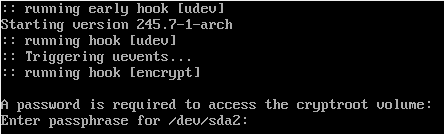

I recently re-installed my Arch Linux with full disk encryption (FDE), as one of the first steps, to bring privacy into my life. This guide documents the installation process in a step-by-step manner. I hope this can help people who also want to practice privacy.
Each step in this guide are linked to the corresponding ArchWiki, precised to section level. You are suggested to read these references and, of course, the official installation guide because
- it is better to understand the process instead of blindly copy-and-pase, and
- I had omitted some uncommon steps that you might need (e.g., non US locale and keyboard layout)
This guide uses modern options like:
| Options | This Setup | |
|---|---|---|
| Disk Encryption | Yes, No | Yes |
| Firmware | BIOS, UEFI | UEFI |
| Disk Partition | MBR, GPT | GPT |
| Boot Loader | GRUB, Syslinux, systemd-boot, etc | systemd-boot |
In addition, I have verified this guide twice by installing on both hard disk and virtual machine respectively. I think it is reproducible.
Let’s start!
1. Verify the boot mode (ref)
This guide assumes we use UEFI. You must ensure that the system is booted in UEFI mode. To verify the boot mode, list the efivars directory:
# ls /sys/firmware/efi/efivars
If the command shows the directory without error, then the system is booted in UEFI mode.
2. Update the system clock (ref)
Use timedatectl to ensure the system clock is accurate:
# timedatectl set-ntp true
3. Partition the disks (ref, GPT fdisk)
The final disk layout from this guide contains two partitions,
| Partition | Size | Code | Name |
|---|---|---|---|
| Boot (/dev/sda1) | 512.0 MiB | EF00 | EFI system partition |
| Root (/dev/sda2) | Rest of the disk | 8300 (default of gdisk) | Linux filesystem |
Traditionally, it is suggested to create an extra swap partition. I don’t because there are more flexible alternatives over allocating a fixed partition for swap. For example, uses swap file, or systemd-swap to automate the swap file on demand.
Use gdisk to partition the disk. See this video:
When completed, gdisk -l /dev/sda should print the disk partitions like these:
GPT fdisk (gdisk) version 1.0.5
Partition table scan:
MBR: protective
BSD: not present
APM: not present
GPT: present
Found valid GPT with protective MBR; using GPT.
Disk /dev/sda: 41943040 sectors, 20.0 GiB
Model: VBOX HARDDISK
Sector size (logical/physical): 512/512 bytes
Disk identifier (GUID): 8EFD04A2-473C-4FCA-9C89-459EEB658DB0
Partition table holds up to 128 entries
Main partition table begins at sector 2 and ends at sector 33
First usable sector is 34, last usable sector is 41943006
Partitions will be aligned on 2048-sector boundaries
Total free space is 2014 sectors (1007.0 KiB)
Number Start (sector) End (sector) Size Code Name
1 2048 1050623 512.0 MiB EF00 EFI system partition
2 1050624 41943006 19.5 GiB 8300 Linux filesystem
4. Prepare the encrypted root partition (ref)
Create and mount the encrypted root partition. You will need to choose the passphrase for the encryption!
# cryptsetup luksFormat /dev/sda2
# cryptsetup open /dev/sda2 cryptroot
# mkfs.ext4 /dev/mapper/cryptroot
# mount /dev/mapper/cryptroot /mnt
5. Prepare the boot partition (ref)
Create and mount the non-encrypted boot partition.
# mkfs.fat -F32 /dev/sda1
# mkdir /mnt/boot
# mount /dev/sda1 /mnt/boot
6. Generate an fstab file (ref)
Run:
# genfstab -U /mnt >> /mnt/etc/fstab
7. Install essential packages (ref)
Use the pacstrap script to install these packages. I added vim for editing config files and dhcpcd for connecting to the Internet after reboot.
# pacstrap /mnt base linux linux-firmware vim dhcpcd
8. Chroot (ref)
# arch-chroot /mnt
9. Time zone (ref)
# ln -sf /usr/share/zoneinfo/America/Los_Angeles /etc/localtime
# hwclock --systohc
10. Localization (ref)
Edit /etc/locale.gen and uncomment en_US.UTF-8 UTF-8 and other needed locales. Generate the locales by running:
# locale-gen
# localectl set-locale LANG=en_US.UTF-8
11. Network configuration (ref)
Add the /etc/hosts:
127.0.0.1 localhost
::1 localhost
12. Configuring mkinitcpio (ref)
Edit /etc/mkinitcpio.conf,
- add the
encrypthooks - move the
keyboardhooks beforeencrypt( so that you can type the passphrase :p )
For example, after this step, HOOKS should look like:
HOOKS=(base udev autodetect modconf block keyboard encrypt filesystems fsck)
13. Generate the initramfs (ref)
Since we have changed to /etc/mkinitcpio.conf manually, we have to re-generates the boot images (e.g., /boot/initramfs-linux.img). Run this command:
# mkinitcpio -P
14. Set the root password (ref)
# passwd
15. Patch the CPU’s microcode (ref)
- For AMD processors, install the
amd-ucodepackage. - For Intel processors, install the
intel-ucodepackage.
For exmaple, run
# pacman -S intel-ucode
16. Configure the Boot Loader with systemd-boot (ref, systemd-boot)
16.1. Install the EFI boot manager
# bootctl install
16.2. Create /boot/loader/entries/arch.conf
- Replace
intel-ucode.imgwithamd-ucode.imgif you have an AMD CPU - Replace the
UUID(notPARTUUID) to the one mapping to/dev/sda2(Runblkidto find out)
title Arch Linux
linux /vmlinuz-linux
initrd /intel-ucode.img
initrd /initramfs-linux.img
options cryptdevice=UUID=XXXXXXXX-XXXX-XXXX-XXXX-XXXXXXXXXXXX:cryptroot root=/dev/mapper/cryptroot rw
16.3. Replace /boot/loader/loader.conf to
default arch.conf
timeout 5
console-mode max
editor no
16.4. Review the configuration
# bootctl list
Boot Loader Entries:
title: Arch Linux (default)
id: arch.conf
source: /boot/loader/entries/arch.conf
linux: /vmlinuz-linux
initrd: /intel-ucode.img
/initramfs-linux.img
options: cryptdevice=UUID=XXXXXXXX-XXXX-XXXX-XXXX-XXXXXXXXXXXX:cryptroot root=/dev/mapper/cryptroot rw
17. Reboot (ref)
Exit the chroot environment by typing exit or pressing Ctrl+d. Then run reboot.
If everything works, it should ask for a password to access the cryptroot, like this screenshot below:

One last thing, if you computer, like mine, is sitting behind a DHCP (e.g., a typical router), you will need to enable dhcpcd to access the Internet. Run,
# systemctl enable dhcpcd
Congratulations! You have installed Arch Linux with Full Disk Encryption!